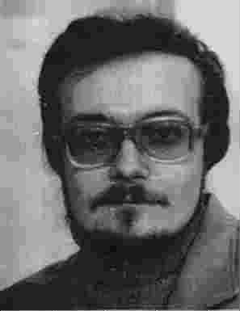

MSDOS and Windows are trademarks of Microsoft Corp. LabVIEW is the trademark of National Instruments Corp. OS-9, OS-9000 and IsaGraf are trademarks of Microware Corp.
FastCounter by bCentral
| Автора !!! |
|---|
 Автор некоторое время работал системным программистом на факультете Информатики Самарского аэрокосмического университета (СГАУ) и сотрудничал в качестве инженера- программиста в Лаборатории АСНИ. Весной 2000 г. закончил аспирантуру и успешно защитил кандидатскую диссертацию на тему "Автоматизированная система для оценивания точностных и динамических характеристик программно-управляемых подсистем измерений". В настоящее время он является доцентом кафедры Информационных систем и технологий СГАУ, читает такие курсы, как "Системы реального времени", "Компьютерная графика" и "Методы и средства защиты компьютерной информации"/ For a few years, author worked as a system programmer at the Computer Sciense Department of Samara State Aerospace University (SSAU). Also he worked at Laboratory of SCADA as a programmer. In 2000, he defended the thesis named as "Automated system for evaluation the precision and dynamics of programable measuring subsystems". Now he is an assistant professor of SSAU and lecturer of "Realtime systems", "Computer graphics" and "Computer security".
Низкоуровневое (языки Си и Модула-2, Asm) и визуальное программирование (LabVIEW) в операционных системах общего назначения (DOS, Windows) и реального времени (OS-9/9000, QNX)/ Low-level programming (С, Modula-2 and Asm languages) and visual programming (LabVIEW) in the common operation systems (DOS, Windows) and in the realtime operation systems (OS-9/9000, QNX);
Объектно-ориентированное имитационное моделирование программно-аппаратных систем реального времени/ Object-oriented simulation of realtime automated systems;
Ну и прочая ерунда, которой автор вынужден заниматься по долгу службы или приработка ради: переводы с английского языка, программирование баз данных в Кларионе и Клиппере и пр./ And another deals, such as translation from English, database programming with Clarion and Clipper, etc..
Научная (и не очень) фантастика/Sciense fiction ;
Футбольное "боление"/Soccer ;
Компьютерная вирусология/Computer virii.